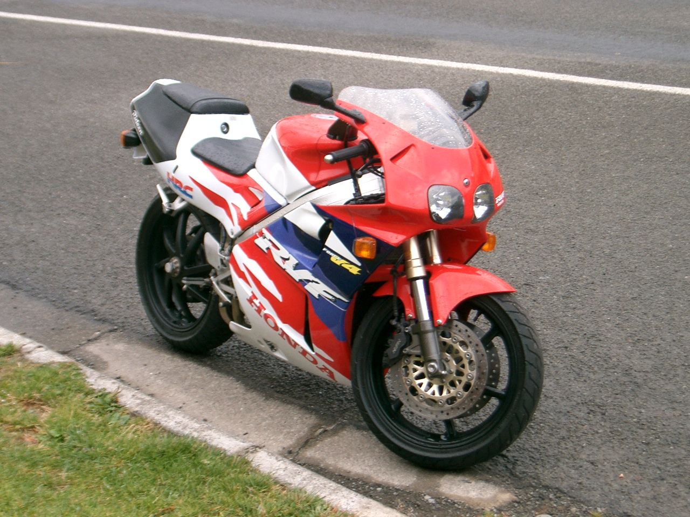
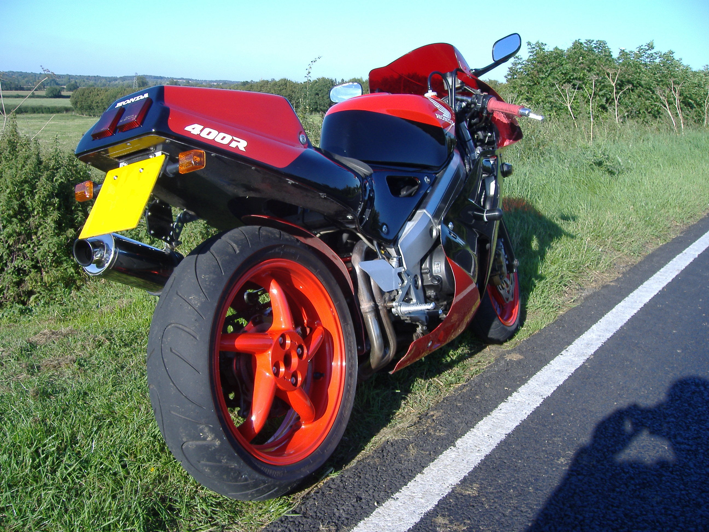
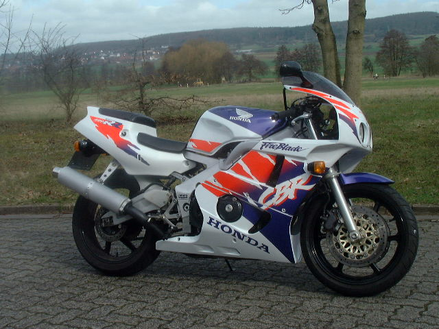
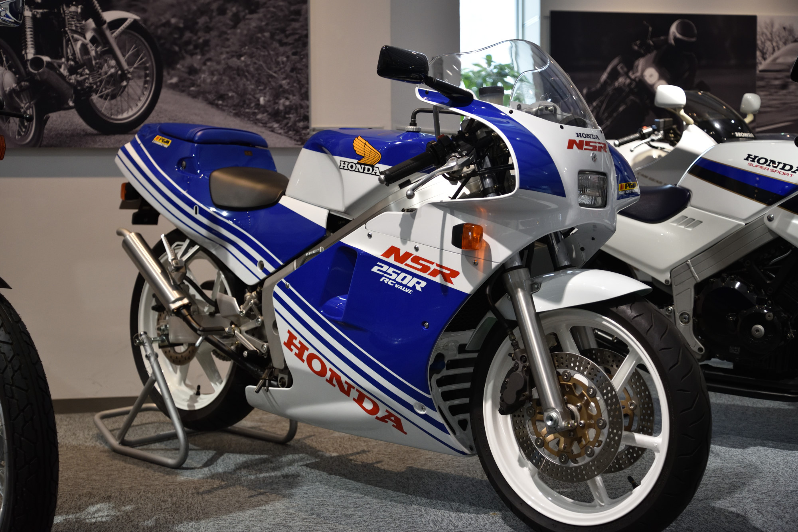
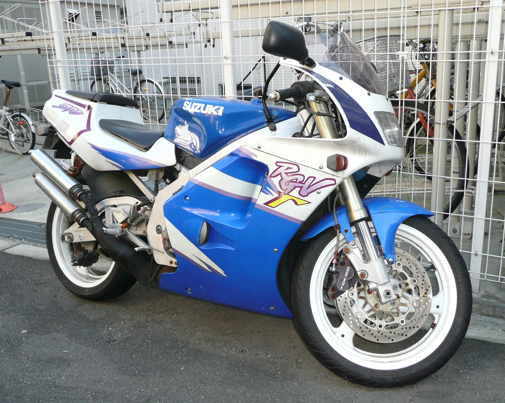

Nous visons des motos cohérentes, propres et intéressantes pour la collection.
Nippon Heritage • Sportives japonaises de collection
Spécialiste de l’import de motos japonaises 2 temps et 4 temps.
Nous sourçons au Japon des motos saines, peu kilométrées et désirables, puis nous les remettons en état en France avant la revente. Pas d’homologation, pas de volume inutile, uniquement des bases choisies.
Contrôle, remise en état et présentation avant la mise en vente en France.
Import, remise en état, vente. Aucune rubrique homologation n’est proposée.
Import de sportives japonaises
2 temps & 4 temps
Japon
Faible kilométrage privilégié
Atelier en France
Sélection rigoureuse
Motos en stock
Quelques modèles représentatifs de notre sélection.
Cette sélection présente des sportives japonaises 2 temps et 4 temps que nous pouvons proposer ou rechercher selon disponibilité.

1994
399 cc
4T
Japon
Honda RVF400R NC35
V4 4 temps iconique, très recherché pour son châssis compact et son identité RC45.

1991
399 cc
4T
Japon
Honda VFR400R NC30
Une 400 V4 de collection emblématique, parfaite pour une sélection sport japonaise premium.

1992
399 cc
4T
Japon
Honda CBR400RR NC29
Une 400 quatre cylindres vive et légère, très cohérente pour une offre youngtimer sportive.

1988
250 cc
2T
Japon
Honda NSR250R MC18
Une vraie sportive 2 temps de collection, emblématique du marché japonais des années 80-90.

1993
250 cc
2T
Japon
Suzuki RGV250 VJ22
Une base 2 temps très désirable, nerveuse et légère, idéale pour une vitrine plus racing.
Recherche personnalisée
Vous avez un modèle précis en tête ? Nous pouvons le rechercher au Japon pour vous.
Indiquez le modèle souhaité, votre budget et vos critères. Nous revenons vers vous avec une recherche ciblée sur des motos cohérentes, saines et adaptées à votre projet.
Nos services
Import, sélection, atelier et vente de motos japonaises 2 temps et 4 temps.
Import sélectif depuis le Japon
Le sourcing ne vise pas la quantité. Chaque moto est choisie pour sa cohérence, son état de départ et sa valeur potentielle une fois remise en présentation pour le marché français.
- Recherche de sportives japonaises 2 temps et 4 temps
- Priorité aux bases saines et peu kilométrées
- Sélection adaptée à une clientèle collection
Remise en état atelier avant mise en vente
Chaque moto fait l’objet d’un contrôle, d’une remise en état adaptée et d’une présentation soignée avant sa mise en vente.
- Contrôle visuel et technique à réception
- Interventions selon l’état réel de la machine
- Présentation propre et valorisante avant diffusion
Vente de motos de collection à forte personnalité
Nous privilégions une présentation claire, sérieuse et documentée, en accord avec le niveau d’exigence attendu sur ce type de motos.
- Catalogue lisible et plus haut de gamme
- Recherche personnalisée pour demandes précises
- Aucune rubrique homologation intégrée au site
Atelier & méthode
Une méthode courte, lisible et crédible.
Notre méthode de travail est simple : sélectionner, contrôler, remettre en état et proposer des motos cohérentes à la vente.
Repérage
Veille des modèles suivis, lecture de l’état réel et tri rigoureux des opportunités.
Achat ciblé
Priorité aux motos complètes, désirables et adaptées à une remise en état sérieuse.
Préparation
Contrôle, nettoyage, intervention atelier et mise en présentation avant publication.
Vente
Diffusion plus premium, échange direct avec les acheteurs et recherche sur commande.